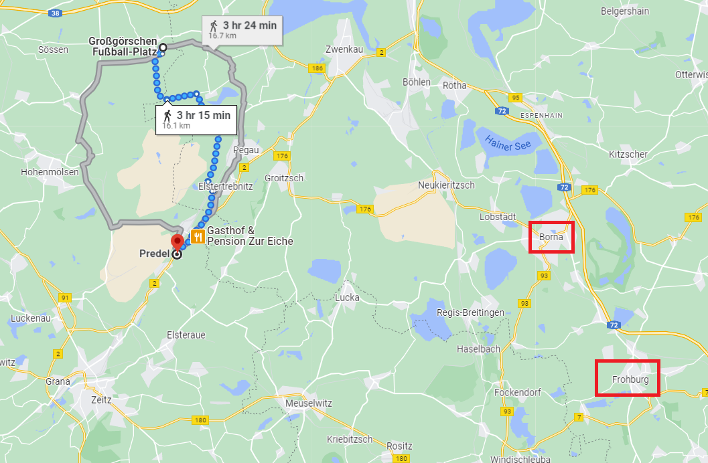
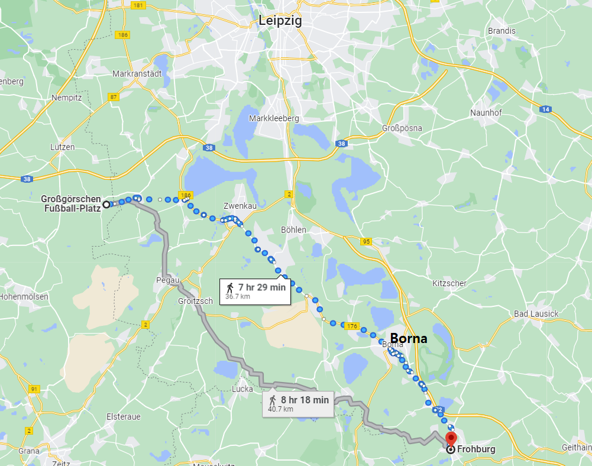
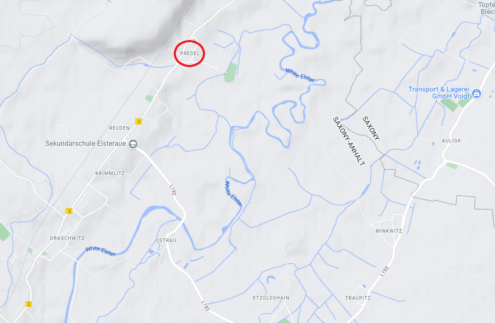
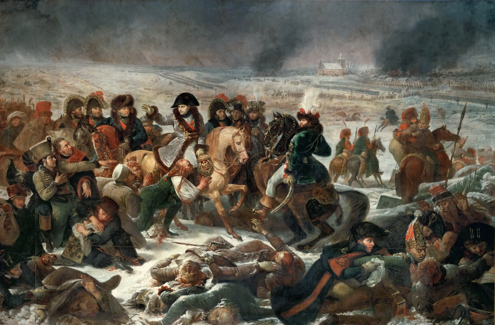

뤼첸 전투 (13) - 혼란 속의 퇴각
게시: 2022-11-28T06:30:02+09:00
연합군의 후퇴 결정이 늦게 내려졌기 때문에 당연히 실제 후퇴도 꽤 늦게 이루어졌습니다. 군대가 후퇴를 시작하려면 의외로 시간이 상당히 많이 걸립니다. 총사령관이 결정을 내린 뒤에도 정식으로 명령이 구두 또는 서면으로 일선 대대장들에게까지 전달되는데까지 시간이 걸렸고, 천막이나 탄약, 솥단지 등의 짐을 싸는데도 시간이 걸렸습니다. 그러나 가장 시간이 걸리고 또 가장 중요한 부분은 바로 후퇴 계획의 작성이었습니다. 어느 부대가 어느 경로를 통해 어디로 후퇴하느냐도 중요했지만, 가장 중요한 것은 별로 달갑지 않은 후방 엄호 임무에 어느 부대를 배치하느냐 하는 결정이었습니다. 비트겐슈타인은 후위 임무에 이번 뤼첸 전투에 전혀 참전하지 않고 자이츠(Zeits)에서 빈둥거리고 있던 밀로라도비치의 군단을 배치했습니다. 밀로라도비치는 즉각 자이츠에서 북서쪽으로 약 10km 떨어진 프레델(Predel) 마을로 전진하여 후위 임무를 맡으라는 명령서를 새벽 2시에 받았습니다. 밀로라도비치의 부대만 여기에 투입된 것은 아니었고, 뷔르템베르크 대공 오이겐의 러시아군 부대도 여기에 함께 투입되었습니다. 그 전날의 격렬한 전투에서 타격을 입은 것은 주로 프로이센군이었으므로, 후위 임무에는 상대적으로 기운이 남아있는 러시아군들을 투입한 것이었습니다. 밀로라도비치도 큰 불만 없이 즉각 행군을 시작했으나 그로스괴르쉔 남쪽 약 12km 지점에 있는 프레델 마을에 도착했을 때는 이미 동이 틀 무렵인 아침 5시 반 정도였습니다. 야간에 10km 행군하는데 3시간 정도 걸린 것은 이해가 갈 만한 일이었습니다.

(전투 현장이었던 그로스괴르쉔으로부터 프레델 마을과 프로이센군의 퇴각 집결지 보르나, 그리고 러시아군의 퇴각 집결지 프로부르크의 거리 및 위치입니다.)
프레델은 전투 현장이었던 그로스괴르쉔과 밀로라도비치가 있던 자이츠의 딱 중간에 있는 마을이고, 연합군이 철수할 남동쪽 경로와는 좀 동떨어진 곳이었습니다. 그런데도 비트겐슈타인이 후위 부대를 여기로 불러들인 것은 프레델에 엘스터 강을 건널 수 있는 다리가 있기 때문이었습니다. 퇴각로가 딱 이것 하나만 있는 것은 아니었습니다. 부상자를 실은 마차를 잔뜩 동반한 5만이 넘는 대군이 깜깜한 밤중에 이동하는데 길을 하나만 이용한다면 교통 정체가 일어날 수 밖에 없었습니다. 비트겐슈타인은 크게 2개 퇴각로를 지정하여, 하나는 보르나(Borna)로, 다른 하나는 남동쪽으로 더 떨어진 프로부르크(Frohburg)로 향하도록 했습니다.

(뤼첸 전투 현장이었던 그로스괴르쉔으로부터 러시아군 집결지인 프로부르크까지의 경로입니다. 당시엔 츠벤카우 쪽이 이미 프랑스군에 위협당하는 상황이었으므로 저 짧은 위쪽 경로를 이용하지 않았고 연합군은 아래 경로, 즉 페가우와 그로이츠쉬, 그리고 루카를 거치는 남쪽 경로를 이용했습니다. 특히, 원래 러시아군은 페가우에서 엘스터 강을 건너서는 안 되었고 더 남쪽인 프레델에서 강을 건너야 했습니다. 그러나 실제로는 온갖 혼란 덕분에 위 지도의 회색 경로가 실제 러시아군이 밟은 퇴각로가 되어 버렸습니다.)
당시 연합군 사령부의 분위기를 보여주는 것이 하나 있습니다. 비트겐슈타인은 이렇게 2개 퇴각로를 지정하면서, 연합군을 국적별로 갈라서 할당했습니다. 즉 프로이센군은 보르나로, 러시아군은 프로부르크로 가게 한 것입니다. 전진할 때는 국적을 가리지 않는 전우애가 넘쳤지만, 후퇴할 때는 아무래도 서로의 이해 관계가 갈렸고 서로에게 불만과 불신이 있다는 것이 드러난 셈이었습니다. 이런 사소한 갈등에 비트겐슈타인 참모부의 엉성한 일처리는 결국 혼란을 낳았습니다. 비트겐슈타인은 2개 퇴각로 중 왼쪽 경로를 프로이센군에게, 오른쪽 경로를 러시아군에게 할당했는데, 이에 따르면 프로이센군은 페가우에서 엘스터 강을 건너게 되어 있었고 러시아군은 더 남쪽인 프레델에서 건너야 했습니다. 그러나 러시아군이 먼저 퇴각을 시작했는데 러시아군은 한시라도 빨리 엘스터 강을 건너려는 초조함에 자기들이 페가우에서 강을 건너기 시작했습니다. 일이 이렇게 되다보니 뒤늦게 퇴각을 시작한 프로이센군이 프레델에서 강을 건너야 했는데, 그러자면 페가우에서 러시아군의 긴 후퇴 행렬을 프로이센군이 관통해야 했습니다. 한밤중에 이런 계획에 없던 교통 정리는 혼란을 낳았고, 거기에 더해 러시아군 참모부 내의 실수도 겹쳐 각 부대들의 후퇴는 엉망진창이 되었습니다. 한번 꼬이기 시작한 퇴각로의 혼란은 엘스터 강을 건넌 이후에도 계속 이어져 러시아군과 프로이센군은 그 다음날 내내 여러번 길바닥에서 엉켜 교통 체증을 빚었습니다. 결국 상당수의 프로이센군은 아예 집결지인 보르나에 도착하지 못할 정도로 혼란은 심각했습니다. 그러나 프로이센군은 물론 러시아군 모두 과거처럼 아무런 동기나 싸울 의지 없이 그저 귀족들에게 끌려나온 병사들이 아닌데다 애국심으로 불타는 장교들이 헌신적인 노력을 다했으므로 그런 혼란 속에서도 부대가 와해되지 않고 결국은 본대에 복귀했습니다.

(프레델 일대의 지형입니다. 엘스터 강이 저렇게 굽이쳐 흐르는 곳이고 당시에도 저기에 다리가 있었습니다. 물론 연합군은 강을 건넌 뒤 다리를 파괴했지요.)
그러나 당연히 연합군의 후퇴는 크게 늦어졌습니다. 1807년 2월 나폴레옹과 베니히센의 러시아군이 크게 맞붙었던 아일라우(Eylau) 전투에서도 사실상 나폴레옹이 패배한 것이나 다름없는 상황이었지만, 정작 밤사이에 후퇴한 것은 러시아군이었지요. 그러나 당시 러시아군은 야음을 틈타 조용히 재빠르게 퇴각했기 때문에 프랑스군은 아침에 해가 뜬 다음에야 그 사실을 알 수 있었습니다. 그런데 뤼첸 전투 다음날인 1813년 5월 3일, 아침 9시가 넘어서도 연합군의 일부는 전날 밤의 노숙 자리에서 출발조차 못했을 정도로 퇴각이 지지부진했습니다. 나폴레옹이 눈치채기 전에 밤사이에 몰래 빠져나간다는 계획은 글러먹은 것입니다.

(이것이 1808년 비방-드농이 당시 나폴레옹 박물관, 즉 지금의 루브르 박물관에 전시될 아일라우 전투도를 경쟁 선발로 뽑은 그로(Antoine-Jean Gros)의 '아일라우 전투'입니다. 당시 비방-드농은 그로의 재능을 높이 평가하여, 이 경쟁에 참가할 의사가 없었던 그로를 강요하다시피 하여 그림을 그리게 했고, 결국 다른 화가들의 작품을 물리치고 이 그림을 선정했습니다. 그림 중앙에 뮈라의 모습이 나폴레옹 못지 않게 중요하게 나왔고, 나폴레옹과 뮈라 사이에는 왼쪽부터 순서대로 베르티에, 베시에르, 콜랭쿠르의 모습이 그려져 있습니다. 그림 맨 왼쪽에는 터번을 쓴 루스탐의 모습도 보입니다. 나폴레옹의 발을 붙잡고 있는 부상자는 어느 리투아니아-폴란드 병사로서, 나폴레옹의 인자함에 감복하여 나폴레옹에게 충성을 맹세하는 모습입니다. 왼쪽에서 나폴레옹을 향해 팔을 뻗고 있는 또다른 리투아니아 병사를 부축하는 사람은 당시 그랑 다르메의 수석 외과의였던 페르시(Pierre-François Percy) 남작입니다. 그로는 이 그림을 의뢰받으면서 나폴레옹이 아일라우 전투에서 실제로 입었던 모자와 외투를 전해 받았고, 그 물건들을 죽을 때까지 소중히 간직했다고 합니다. 이 그림은 지금도 루브르 박물관에 걸려 있습니다.) 이런 상황에서 프랑스군이 퇴각하는 연합군의 후미를 공격했다면 연합군은 대패를 겪었을 것입니다. 그러나 일부 프랑스군 유격병 부대가 연합군 후위 부대에게 총질을 하며 귀찮게 한 것 외에는 아무런 추격이 없었습니다. 러시아군을 위한 후위 임무를 맡았던 뷔르템베르크 대공 오이겐은 5월 3일 오후 늦게까지 그로이츠쉬(Groitzsch) 인근에서 자리를 지키고 있었으나 아무런 추격을 만나지 못했습니다. 해가 질 무렵에야 츠벤카우 쪽에서 로리스통의 제5 군단이 접근하고 있다는 보고가 들어왔고, 오이겐은 여유있게 퇴각을 시작할 수 있었습니다. 밀로라도비치도 마찬가지로 아무 추격대를 만나지 못했습니다. 대체 왜 나폴레옹은 눈 앞에서 이런 절호의 찬스가 날아가는 것을 뻔히 지켜만 보고 있었을까요? Source : The Life of Napoleon Bonaparte, by William Milligan Sloane Napoleon and the Struggle for Germany, by Leggiere, Michael V
https://en.wikipedia.org/wiki/Napol%C3%A9on_on_the_Battlefield_of_Eylau